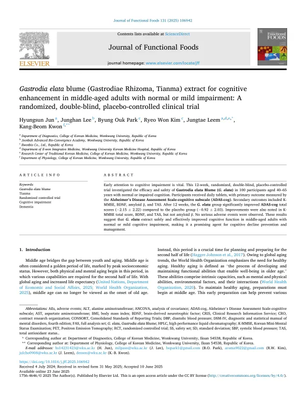

Gastrodia elata blume (Gastrodiae Rhizoma, Tianma) extract for cognitive enhancement in middle-aged adults with normal or mild impairment: A randomized, double-blind, placebo-controlled clinical trial
Jun H, Lee J, Park BO, Kim RW, Leem J, Kwon KB
Journal of Functional Foods 131:106942

첫 장 · 오픈액세스First page · open access
논문 소개Summary
노화는 중년에 이미 시작됩니다. 경도인지장애는 65세 이상의 10~20%에서 나타나고 그 가운데 해마다 5~10%가 치매로 넘어갑니다. 알츠하이머병 약물 개발이 거듭 실패하면서 연구의 무게중심은 치매 치료에서 인지저하의 진행을 늦추는 쪽으로 옮겨 갔습니다. 천마는 동아시아에서 어지럼과 경련, 마비에 오래 써 온 약재로 실험에서 신경보호 작용이 보고되었지만, 사람을 대상으로 한 연구는 표본이 작고 젊은 층이나 노년층에 치우쳐 있었습니다.
원광대학교한방병원에서 12주 동안 진행한 무작위 배정, 이중맹검, 위약 대조 임상시험입니다. 간이정신상태검사 20~28점인 중년 100명을 두 군에 1대 1로 나누고 하루 한 알 930밀리그램을 아침 식후에 먹게 했습니다. 알약에 든 천마 추출물은 500밀리그램, 가스트로딘으로는 16.65밀리그램입니다. 일차 평가변수는 알츠하이머병 평가척도 인지영역 점수이고 이차로 간이정신상태검사와 뇌유래신경영양인자, 아밀로이드 베타, 총항산화능을 보았습니다.
111명 가운데 100명이 등록했고 96명이 끝까지 마쳤으며 98명이 분석에 들어갔습니다. 12주 뒤 인지영역 점수는 천마군에서 2.15점, 위약군에서 0.92점 낮아져 두 군의 차이가 유의했습니다. 하위 항목 가운데 유의한 것은 단어 회상 하나였습니다. 간이정신상태검사는 1.64점과 1.08점 올라 차이가 있었고 뇌유래신경영양인자와 총항산화능도 천마군에서 유의하게 나았습니다.
아밀로이드 베타는 달랐습니다. 천마군 안에서는 유의하게 줄었으나 위약군과 견주면 차이가 없었습니다. 저자들은 앞선 동물 실험에서 나온 아밀로이드 감소가 사람에서는 재현되지 않았다고 그대로 적었습니다. 이상반응은 천마군 10명과 위약군 7명에서 모두 25건 있었고 군 사이에 차이가 없었으며 중대한 것은 없었습니다. 다만 명치 통증과 복부 불편감 두 건은 시험식품과 관련이 있을 수 있다고 보아 복용을 멈췄고 10~30일 안에 회복했습니다.
저자들이 밝힌 한계는 단일 기관 모집, 총점은 좋아졌으나 하위 항목은 일부만 좋아졌다는 점, 12주 너머를 보지 않았다는 점, 맹검이 지켜졌는지 참여자에게 물어 확인하지 않았다는 점입니다. 이 결과는 앞선 동물·세포 실험과 함께 2024년 6월 식품의약품안전처의 건강기능식품 기능성 원료 인정으로 이어졌습니다. 덧붙이면 대상자 나이가 초록과 연구설계에는 40세부터, 선정기준에는 45세부터로 적혀 있어 원문 안에서 어긋납니다.
Middle age is when the body and the mind begin to age. Mild cognitive impairment affects 10 to 20 percent of people over 65, and 5 to 10 percent of those cases progress to dementia each year. As drug trials for Alzheimer's disease failed repeatedly, the centre of gravity in research shifted from treating dementia towards delaying the passage from cognitive decline into it. Gastrodia elata Blume has long been used in East Asia for dizziness, convulsion and paralysis, and laboratory work reports neuroprotective effects — but human studies had small samples and were confined to younger or older populations.
This was a 12-week randomised, double-blind, placebo-controlled trial at Wonkwang University Korean Medicine Hospital. One hundred middle-aged adults with a Korean MMSE score of 20 to 28 were allocated 1:1 to G. elata extract or placebo and took one 930 mg tablet daily after breakfast. Each tablet delivered 500 mg of extract, corresponding to 16.65 mg of gastrodin as the marker compound. The primary outcome was the cognitive subscale of the Alzheimer's Disease Assessment Scale; secondary outcomes were the Korean MMSE, brain-derived neurotrophic factor, amyloid beta and total antioxidant status. Allocation was handled independently, so participants, assessors and pharmacists were all blinded.
Of 111 volunteers, 100 were enrolled, 96 completed the trial and 98 entered the analysis. After 12 weeks the ADAS-cog total fell by 2.15 points in the G. elata group and 0.92 in the placebo group, a significant between-group difference. Among the subscores only word recall reached significance. The Korean MMSE rose by 1.64 and 1.08 points respectively, again differing significantly, and brain-derived neurotrophic factor and total antioxidant status also improved significantly in the treatment group.
Amyloid beta behaved differently. It fell significantly within the G. elata group after 12 weeks, but there was no difference against placebo. The authors write plainly that the amyloid reduction seen in earlier animal work was not reproduced in humans. Adverse events occurred in 10 participants on G. elata and 7 on placebo, 25 events in all, with no difference between groups and none serious. Two of them — epigastric pain and abdominal discomfort — were judged possibly related to the study product, intake was stopped, and both resolved within 10 to 30 days.
The authors list their limitations: recruitment from a single centre; total scores improved while only some subscores did; nothing beyond 12 weeks was examined; and blinding success was never confirmed by asking participants. Together with the preceding animal and cell work, these results led in June 2024 to approval of the extract as a functional ingredient for health functional food by the Korean Ministry of Food and Drug Safety. One inconsistency should be noted: the abstract and study design give the age range as starting at 40, while the eligibility criteria give 45.
인용Cite
Jun H, Lee J, Park BO, Kim RW, Leem J, Kwon KB. Gastrodia elata blume (Gastrodiae Rhizoma, Tianma) extract for cognitive enhancement in middle-aged adults with normal or mild impairment: A randomized, double-blind, placebo-controlled clinical trial. Journal of Functional Foods. 2025;131:106942. doi:10.1016/j.jff.2025.106942